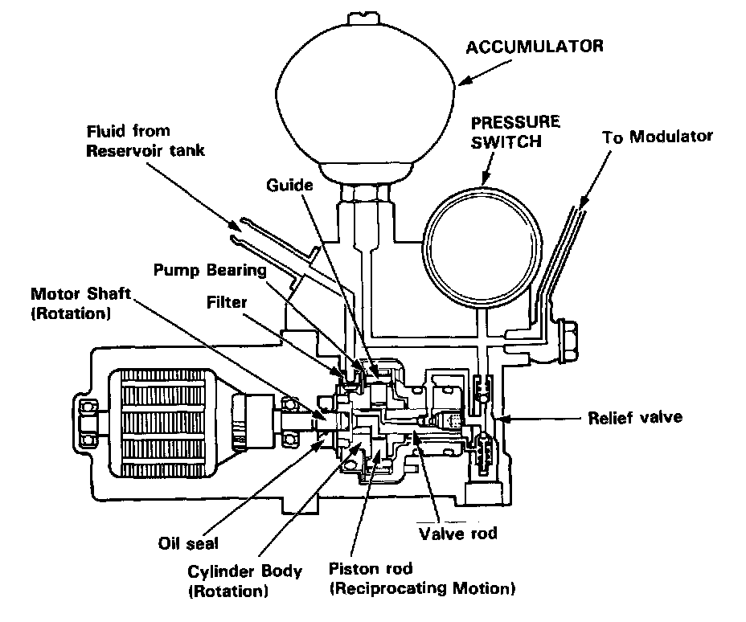

Power Unit

Power Unit
The power unit consists of a motor, filter, guide, piston rod and cylinder body. Since a guide is positioned off-set to the center of the motor shaft, the rotation of the motor and cylinder body provides the reciprocating motion to the piston rod. The brake fluid is thus pressurized and fed to the relief valve, accumulator and modulator.
As the pressure in the accumulator exceeds the prescribed level, the pressure switch is turned on. Approx. 0.5 seconds after receiving the ON-signal, the control unit stops the motor relay operation. In this state, the pressure in the accumulator reaches 230 kg/cm2.
If the pressure doesn't reach the prescribed value after the motor has operated continuously for a specified period, the control unit stops the motor and activates the anti-lock brake system indicator light.